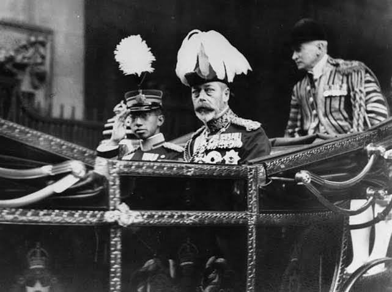

จักรพรรดิฮิโรฮิโตะ (Emperor Hirohito)

ทรงเป็นจักรพรรดิแห่งญี่ปุ่นตั้งแต่วันที่ 25 ธันวาคม 1926 จนกระทั่งเสด็จสวรรค์ในวันที่ 7 มกราคม 1989 พระองค์ทรงครองราชย์ในช่วงที่ ลัทธิชาตินิยม และลัทธิทหารของญี่ปุ่น เพิ่มสูงขึ้น ซึ่งถึงจุดสูงสุดเมื่อจักรวรรดิญี่ปุ่น เข้า ร่วมสงครามโลกครั้งที่สองในฐานะฝ่ายอักษะการทิ้งระเบิดปรมาณูที่ฮิโรชิมาและนางาซากิทำให้ฮิโรฮิโตะประกาศยอมจำนนของญี่ปุ่นต่อฝ่ายสัมพันธมิตรในเดือนสิงหาคม 1945 ภายใต้แรงกดดันจากฝ่ายสัมพันธมิตร พระองค์ทรงออกประกาศมนุษยธรรมในเดือนมกราคม 1946 โดยปฏิเสธความเป็นเทพของจักรพรรดิในฐานะผู้สืบเชื้อสายจากเทพีอะมาเทราสุ รัฐธรรมนูญ ของญี่ปุ่น ซึ่ง ประกาศใช้ในเดือนพฤศจิกายน 1946 เน้นย้ำถึงสันติภาพและ ระบอบราชา ธิปไตยภาย ใต้รัฐธรรมนูญ ตรงกันข้ามกับ ลัทธิ จักรวรรดินิยมและระบอบสมบูรณาญาสิทธิราชย์หลังสงคราม พระองค์ทรงครองราชย์ในช่วงที่เศรษฐกิจญี่ปุ่นเติบโตอย่างที่ไม่เคยมีมาก่อน ซึ่งรู้จักกันในชื่อ "ปาฏิหาริย์ทางเศรษฐกิจของญี่ปุ่น" ฮิโรฮิโตะทรงครองราชย์เป็นเวลา62ปี13วัน เป็นการครองราชย์ที่ยาวนานที่สุดในประวัติศาสตร์ญี่ปุ่น และเป็นการครองราชย์ที่ยาวนานเป็นอันดับที่ 12 ในประวัติศาสตร์โลกที่สามารถตรวจสอบได้